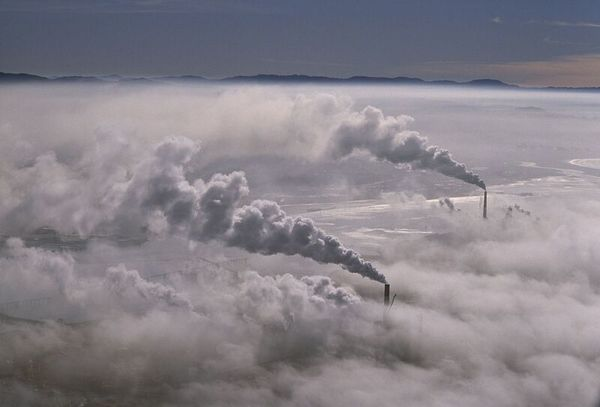
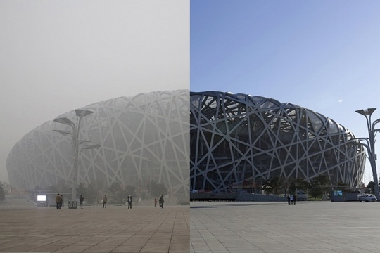
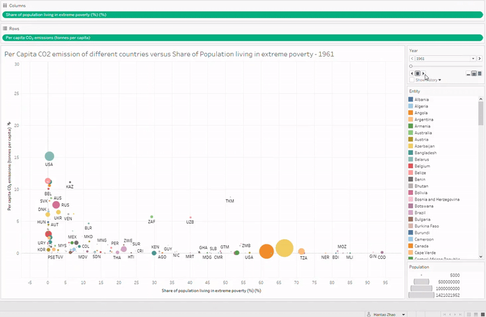
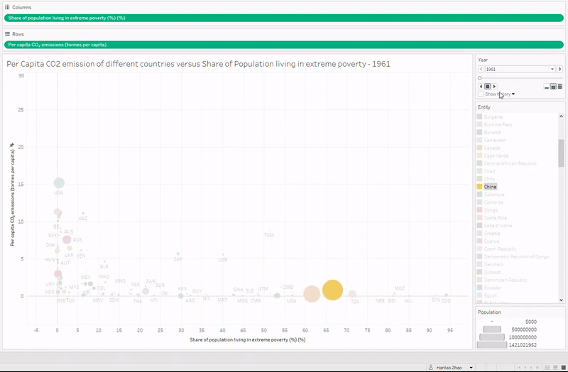
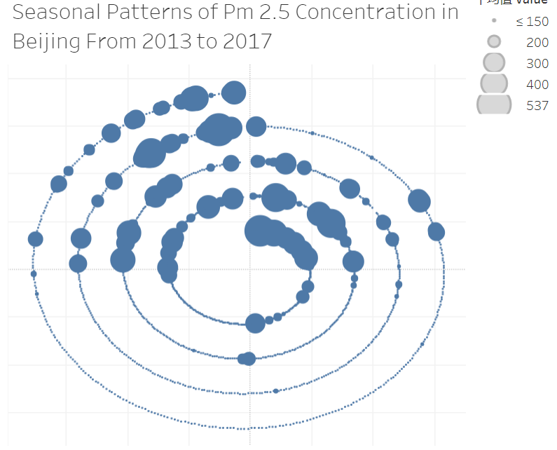
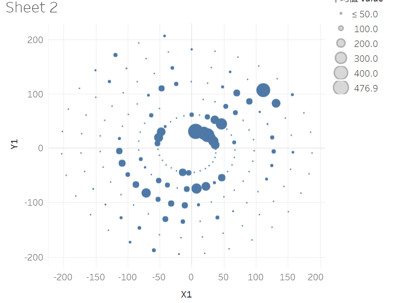
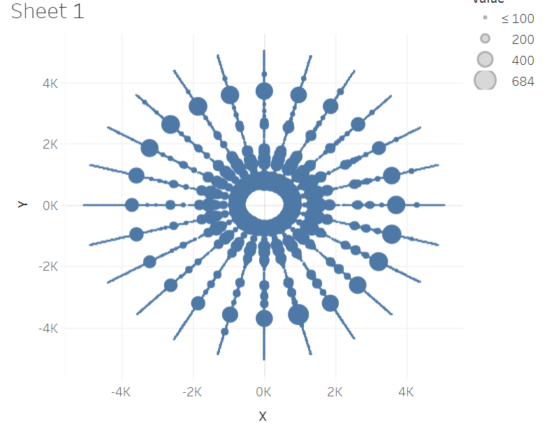

The topic of air pollution is catching worldwide attention. Each year, various conferences and reports in mass media are related to air pollution. In this project, we are trying to investigate and explain the some typical patterns in air pollution.
An Early Introduction to Air Pollution
In 1948, a lethal haze covers Donora, Pennsylvania. The darkness last for 5 days and caused 20 recorded death. The haze was a result of the emission of carbon monoxide, sulfur dioxide and metal dust pollution into the atmosphere. Pollution was ubiquitous in Donora because the steel and zinc smelters had long released dirty air to the town. The case of Donora was widely publicized as "Crises like Donora", and people started to notice and take actions to prevent air pollution.
Silent Spring, a famous book published in 1962, was considered the first to bring environmental concerns to the general public. The book criticize the potential harmful effects of using chemical pesticides, and resulted the ban on DDT.
The book pressed the movement towards environmental protection. In 1970, which is regarded as a milestone year latter, the US Congress passed the Clean Air Act Amendments. In the document, the air quality standard is stated so that various pollutants were banned.
Current Situation
Nowadays, the major threat of air pollution has changed from mass pollutants released by factories to the combustion of fossil fuels. For example, the carbon dioxide will cause greenhouse effect and the products of incomplete combustion is dangerous. Carbon dioxide, despite its chemical stability, is now considered one of the air pollutants as it's the substance that contributes most to greenhouse effect.
Greenhouse effect is a phenomenon caused by greenhouse gases such as carbon dioxide, methane and nitrogen oxide. Greenhouse effect will cause the average temperature of the Earth's surface to continuously increase, which will result in the rise of sea-level and a series crisis. In modern times, the emission of greenhouse gases is serious due to the widely usage of fuel. Burning process will inevitably release carbon dioxide, and fuel engine is the base of all walks of life.

Since the start of Industrial Age, the growth of manufacturing has raised air pollution into new realms. The pollution is especially serious in developing countries and the cities with heavy industry. For example, Beijing survives daily-based haze equivalent to 2 packs of cigarettes each winter.
In addition to the greenhouse effects, fossil fuel can have more direct problems when its combustion is incomplete. Today, in developing countries, an estimated three billion people burn solid fuels when cooking, which lead to indoor air pollution. Millions of premature deaths are ascribed to the pollutants from fuel each year.

Visualization 1:
Soviet Union(now Russia and some other countries) was a new country before the world war with low industrialization. The per capita carbon dioxide was low before the world war 2. The world war 2 give the Soviet Union a great opportunity to develop its country. At the same time the pressure from the cold war enhanced this development and makes Soviet Union keep adding emission amount of carbon dioxide in nearly 40 years. When the highest point of cold war reaches, the carbon dioxide emission amount is over 10 times the amount just after the World War Two. The emission amount drop largely after the collapes of USSR in 1991. The left plot use a line chart encode year on x-axis and per capita CO2 emission on y-axis. The right plot is an autoplay vedio of a map encoding the emission amount on density of color.
Soviet Union's example shows clearly that Soviet Union's per capita CO2 emission is affect by the start of cold war(positively) and collape of USSR(negatively).
Here we know that the historical event can significant affect the per capita CO2 emission of a country or even the whole world. YOU CAN FIND YOUR OWN FINDINGS USING THE FOLLOWING VISUALIZATION!
You can find a clearer view of the Soviet Union's raise and drop from the small multiples on left side bar. You can hover on one of the small multiples to change the main map(in the center) to that year. When you hover on a specific country, the line chart of the country will appear on the right side bar.
Some pattern you may find(only to enlighten your mind):
1. Canada and USA has nearly the same pattern of emission over time
2. England raises very early since the Industrial Revolution
We can find that the historical event affect the countries economy and then further affect the CO2 emission per capita of the country. We will further study the mathematical relationship between a country's economy development and the CO2 emission.
Visualization 2:
In the second visualization, we are trying to study the relationship between per capita carbon dioxide emission and economical development.
Each circle represents a country, and the area of the circle represents the population of the country. The x axis represents the rate of population living in extreme poverty, which we think is a good indicator of a country's overall economic development. The y axis represents per capita carbon dioxide emission. The rate of population living in extreme poverty is not available for some countries in some years, therefore we filled these cells so that the transition is linear.
Let's take a look at the entire world since 1961 to 2017.

We can observe a global trend that most of the countries are moving to the left or moving upwards. We can conclude that for most of the countries, the rate of population living in extreme poverty are generally decreasing, however, per capita carbon dioxide emission rises.
Now let's focus on developing countries. Here we take China as an example, because of her large population.

The trend is now more obvious. Before 1990s, more than half of Chinese people live in extreme poverty. However, by 2011, only 10% of the population are still poverty-stricken. By 2017, less than 1% of Chinese live in poverty(That's still more than 10 million people, though). Undoubtedly, as a developing country, China has done well in eliminating poverty by large-scale industrialization, but as a result, per capita carbon dioxide emission rises significantly(but still far from the level of developed countries, such as USA and Australia). You can find a similar pattern for India and Brazil as well.
We can conclude that per capita carbon dioxide emission is approximately an inverse function of the rate of population living in extreme poverty. Therefore, generally speaking, as economy develops, carbon emission rises.
Finally, we provide an interactive Tableau visualization on this html.
For better visualization effects, it's strongly recommended that you use the full screen mode. You can find the full-screen button at the right-lower corner of the visualization.
Desktop Tableau supports clicking on the play button and play automatically. However, this function is not available in html version. You need to click the right arrow manually to advance by a year. You can also select a specific year in the drop-down selection box.
To select a specific country, you can select one country by clicking on the entity list. You can use control+click to select multiple countries.
For China, one of the costs of economical development is environmental pollution. In winter, northern China is haunted by serious air pollution. Is there any seasonal pattern in pollutant concentration?
Visualization 3:
In Visualization 2, we have noticed China's well performance in reducing Carbon Dioxide emission without hindering development of economy.
To deeply acknowledge advantage and disadvantage in China's greenhouse controlling, we will study the data in Beijing, capital of China, as the most representative dataset.
This dataset contains carbon dioxide emission in Beijing for more than 10 years in hour. In this visualization, we show only the data from 2013 to 2017, which are the latest data that generate most relative and informative conclusion. The graph method is spiral graph, in order to indicate a seasonal pattern. The cycle of the spiral graph is year, and each blue dot in it represents one day, while size of the dot encodes average carbon dioxide emmission in Beijing That day. If user requires more detailed information, he can hover the mouth over the dot, and see specifically year, month, day of the data, as well as accurate emission value.
From the spiral graph, we can find an obvious pattern that, high intensive emission accumulates in the period from October to January. In order
to identify the reason resulting in it, we convey more research, and find out that it is due to weather in Beijing. Beijing's winter is very cold,
so the government will provide central heating to all the family when winter comes. This heating system is based on burning coal, which will
produce abundant carbon dioxide in winter. This accounts for why Beijing's carbon dioxide emission is so high from October to January, exactly the time for winter.
Despite the pattern found in year cycle graph, we also provide two other spiral graphs in different cycles. The second graph 'Image 2 - Month' has cycle
in month, and each dot represents one day. The third graph 'Image 3 - Day' has cycle in day, and each dot represents one hour. All this visualizations
are shown in the following drop-down menu. We expect users to freely browse though these visualizations and come up with their own conclusions or
patterns in them



Conclusion
In the background part, we present a brief introduction to the typical is air pollutants. Hopefully, by interacting with the graphs, you have gained some knowledge about the trend of air pollutants emission.
By interacting with the first graph, we conclude the changes in the past century and explain the effect of some great historical events. In the second graph, we communicate to you that there exists a common trend of pollutant emission with economic growth. Then we go deeper into how pollutant emission changes each year, and we raise an example to you for seasonal patterns.
Takeaway
After going through the website, we hope that you have developed a basic idea of air pollution and get some thoughts on the future of the issue. Moreover, we hope that you pay attention to the topic of air pollution and environmental protection as well.
Reference
"History Of Air Pollution | US EPA." US EPA. N. p., 2014. Web. 15 Dec. 2019.
"Silent Spring." En.wikipedia.org. N. p., 2019. Web. 15 Dec. 2019.
"A Brief History Of Air Pollution." Theweek.com. N. p., 2015. Web. 15 Dec. 2019.
"Greenhouse Gas." En.wikipedia.org. N. p., 2019. Web. 15 Dec. 2019.